Overview
As an overview of this project, we implemented some further ray tracing techniques that are able to enhance the "realisticness" of our rendering and render different materials. We chose to complete task 1 and task 4. In part 1, we implemented algorithms which lets us realistically render mirror and glass models using both reflection and refraction. In part 4, we extended from a pin-hole camera model to a thin-lens camera model where we can set the depth of field, allowing us to change the distance and range of focus within a rendered scene. In the end, we are able to generate renderings that strongly showcases the desired effects.
* NOTE: For this project, you will choose TWO out of the four given parts to complete. One of those parts must be Part 1 or Part 2. In other words, you can choose any combination of two parts except the pair (Part 3, Part 4).Part 1. Mirror and Glass Materials
Implementation and Overview
In Part 1, for the BSDF::reflect((…), we used the perfect specular reflection from lecture: wi = -wo + 2(wo * n) * n, where n is Vector(0, 0, 1) and wo * n calculates cos(theta). Then, for mirror materials, we filled out MirrorBSDF::sample_f((…) which uses BSDF::reflect((…) and returns reflectance / abs_cos_theta(*wi). Then, for refraction, BSDF::refract(…) calculates wi from wo by setting wi.x = −ηwo.x, wi.y = −ηwo.y, and wi.z = ∓sqrt(1 − η^2 * (1 - wo.z^2)), where η = 1/ior or ior depending on whether wo is entering or exiting. Then, RefractionBSDF::sample_f(...) uses BSDF::refract(…) and then returns transmittance / abs_cos_theta(*wi) / eta^2. Finally, for GlassBSDF::sample_f(...), we used the Fresnel equations to model the physics and Schlick’s approximation to find the ratio. If there is total internal reflection, we assign the reflection, assign pdf to 1, and return reflectance/ abs_cos_theta(*wi), and otherwise, we flip a coin based on Schlick’s approximation. If the flip is true, we assign reflection, assign pdf to R, and return R * reflectance / abs_cos_theta(*wi). If it is false, we assign refraction, set pdf to 1-R, and return (1-R) * transmittance / abs_cos_theta(*wi) / eta^2. I didn’t have any huge problems with this part. I had trouble understanding what to do at first, but reviewing lecture and looking at Ed helped a lot. I also had some bugs where I kept confusing the words “reflect” and “refract” because the words are so similar, and I called the wrong one a few times. I also used cos_theta instead of abs_cos_theta at first which caused some weird renders.
|
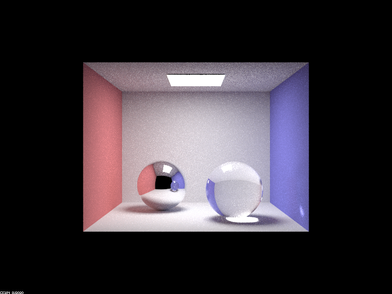
|
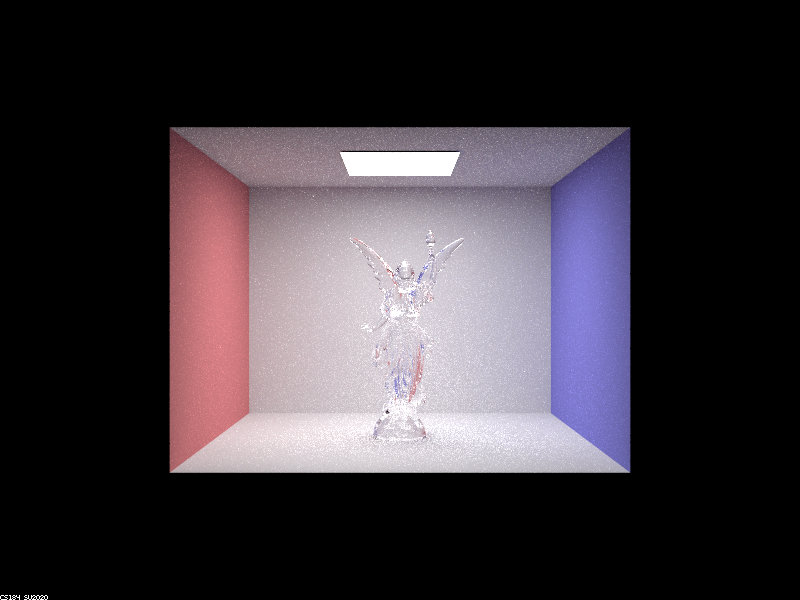
|
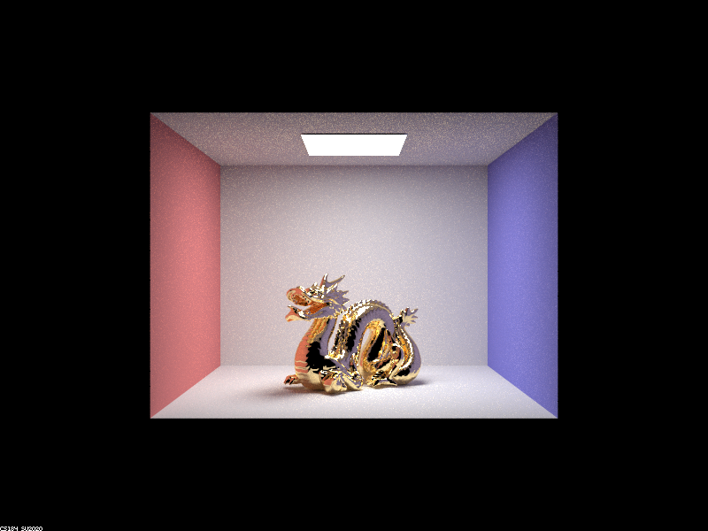
|
Show a sequence of six images of scene `CBspheres.dae` rendered with `max_ray_depth` set to 0, 1, 2, 3, 4, 5, and 100. The other settings should be at least 64 samples per pixel and 4 samples per light. Make sure to include all screenshots.
|
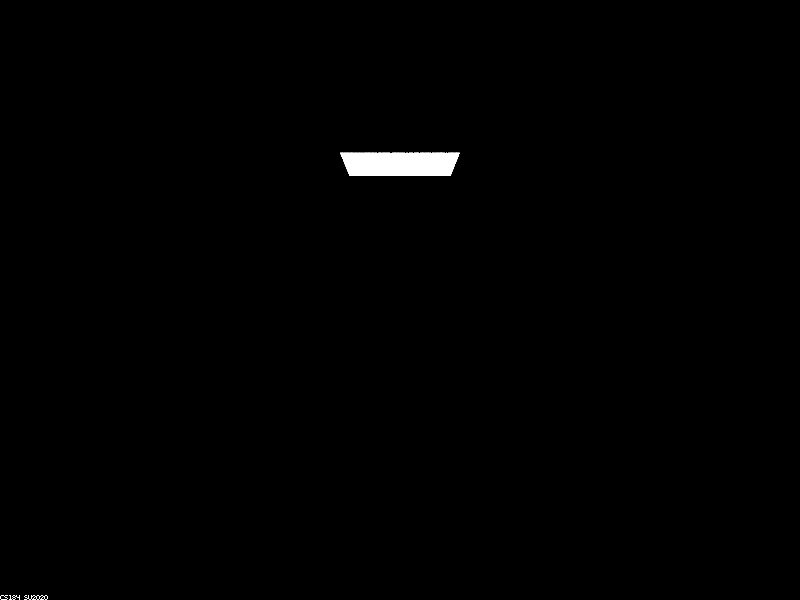
|
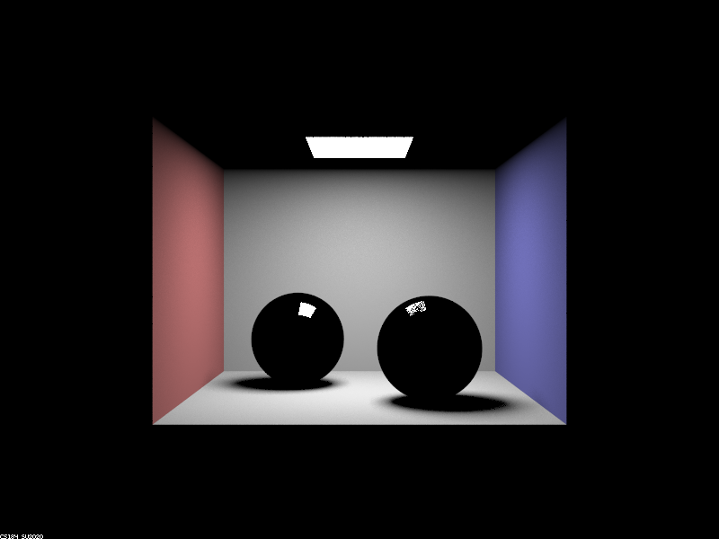
|
|
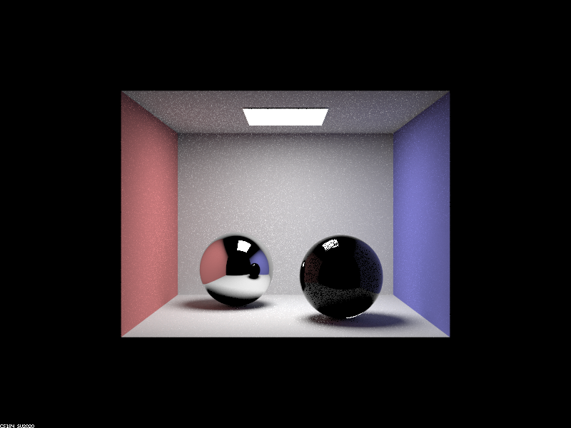
|
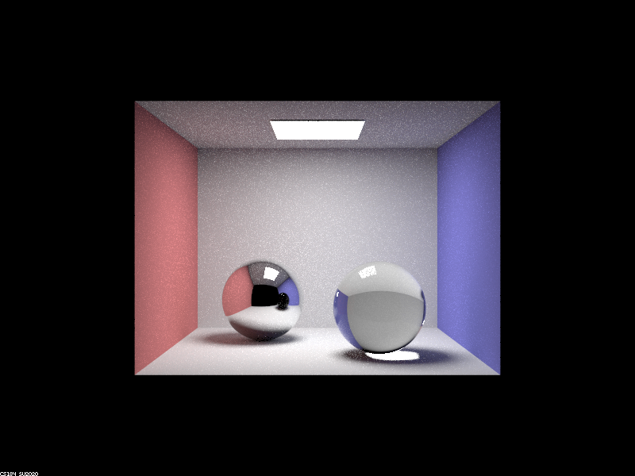
|
|
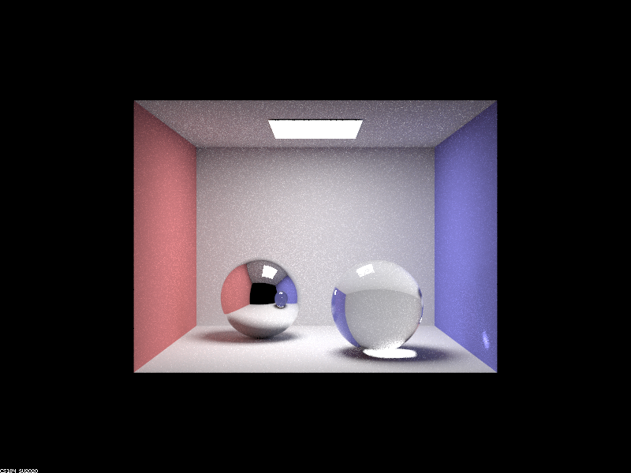
|
|
|
|
Point out the new multibounce effects that appear in each image.
0 max_ray_depth: There is a white rectangle at the top of the image.
1 max_ray_depth: The walls and ground appear. The balls show up in black except for a small white rectangle.
2 max_ray_depth: The left/reflective ball shows the walls and other ball. The ceiling shows up. The balls' shadows also now have some color.
3 max_ray_depth: The right/refractive ball becomes see-through. The light under the right ball is also bright now. The left ball now reflects the ceiling.
4 max_ray_depth: A white spot appears on the right wall, and the bottom of the right ball is brighter.
5 max_ray_depth: The changes are not that obvious, but some areas like the top of the right ball are brighter.
100 max_ray_depth: The difference from 5 max_ray_depth is not that big. Things might be brighter, but I could also be imagining things.
Explain how these bounce numbers relate to the particular effects that appear. Make sure to include all screenshots.
0 max_ray_depth: Everything that appears with 0-bounce should be a light source, so it makes sense that only the light on the ceiling appears.
1 max_ray_depth: In one bounce, the light bounces off the walls, ground, and balls.
2 max_ray_depth: The mirror ball appears here because the light bounces once off the walls, ground, and balls and then bounces off the reflective ball. The ceiling appears because the light bounces off first off the walls and ground and then bounces off the ceiling. The shadows become colorful from bounces off the walls.
3 max_ray_depth: The refractive ball appears because one bounce hits off the top of the right ball, then another goes through the ball and hits the bottom of the ball, and then another hits the ground beneath. The ceiling in the relective ball shows up because the ceiling, which appears in 2 bounces, then bounces off the reflective ball.
4 max_ray_depth: The light on the right wall appears from one bounce off the left ball, one off the right ball, one refracted through the right ball, and the last on the right wall. The bottom of the right ball is brighter becase the light that hit the ground in 3 max_ray_depth bounces off the bottom of that ball.
5 max_ray_depth: There are no crazy changes. There are just very small changes in the brightness. This could be that the light is closer to converging.
100 max_ray_depth: The light here has basically converged. There aren't that many changes since 5 max_ray_depth, and the only changes might be that things are a little brighter from bounces since.
Part 2. Microfacet Material
Show a screenshot sequence of 4 images of scene `CBdragon_microfacet_au.dae` rendered with $\alpha$ set to 0.005, 0.05, 0.25 and 0.5. The other settings should be at least 128 samples per pixel and 1 samples per light. The number of bounces should be at least 5. Describe the differences between different images. Note that, to change the $\alpha$, just open the .dae file and search for `microfacet`.
Your response goes here.
Show two images of scene `CBbunny_microfacet_cu.dae` rendered using cosine hemisphere sampling (default) and your importance sampling. The sampling rate should be fixed at 64 samples per pixel and 1 samples per light. The number of bounces should be at least 5. Briefly discuss their difference.
Your response goes here.
Show at least one image with some other conductor material, replacing `eta` and `k`. Note that you should look up values for real data rather than modifying them arbitrarily. Tell us what kind of material your parameters correspond to.
Your response goes here.
Part 3. Environment Lightl
Pick one *.exr* file to use for all subparts here. Include a converted *.jpg* of it in your website so we know what map you are using.In a few sentences, explain the ideas behind environment lighting (i.e. why we do it/how it works).
Your response goes here.
Show the *probability_debug.png* file for the *.exr* file you are using, generated using the `save_probability_debug()` helper function after initializing your probability distributions.
Your response goes here.
Use the `bunny_unlit.dae` scene and your environment map *.exr* file and render two pictures, one with uniform sampling and one with importance sampling. Use 4 samples per pixel and 64 samples per light in each. Compare noise levels. Make sure to include all screenshots.
Your response goes here.
Use a different image (if you did part 2, we recommend `bunny_microfacet_cu_unlit.dae`) and your environment map *.exr* file and render two pictures, one with uniform sampling and one with importance sampling. Use 4 samples per pixel and 64 samples per light in each. Compare noise levels. Make sure to include all screenshots.
Your response goes here.
Part 4. Depth of Field
For these subparts, we recommend using a microfacet BSDF scene to show off the cool out of focus effects you can get with depth of field!Implementation and Overview
Most of our implementation are achieved by following the relationship given in the following diagram.
First, I found the generated ray direction with the same code as from part 3.1 generate_ray function. Then I sampled the disk representing the thin lens with the below formula for pLens:
Then, I generated a ray starting at (0,0,0) towards the ray direction calculated earlier, then found the position of this ray at time focalDistance which we refer to as pFocus. Using this, I found the ray that originates from pLens and set its direction towards pFocus as pFocus-pLens, which is the blue segment in the earlier figure. Then I normalized this vector and finally generated a ray which originates from pLens in world coordinates+pos with direction of the blue segment found earlier in world coordinates. Then I set the min and max t of this ray with nClip and fClip, and return this ray as the result. I initially had a bug because I did not add pos to pLens for the starting position of the ray, but was able to debug it and implemented everything correctly and quickly.
In a few sentences, explain the differences between a pinhole camera model and a thin-lens camera model.
With the pin-hole camera model, everything is in focus. With the thin-lens camera model, objects are only in focus if they’re within a plane at distance “focal distance” away from the lens. By adjusting the focal distance and aperture size of the thin lens model, we can get different scenes where different depth ranges of the image is in focus. A pinhole camera model is theoretically the thin-lens camera model with aperture radius 0 where everything is in focus.
Show a "focus stack" where you focus at 4 visibly different depths through a scene. Make sure to include all screenshots.
I fixed camera lens radius to 0.2, and changed depth ranging from 4 to 5.5 with 0.5 increments. It may be seen that with depth 4, the focus depth is in front of the dragon and the dragon is entirely blurry. With 4.5, it somewhat focuses on the front part of the dragon and with 5 with focuses on the more back part of the dragon. With 5.5 the focus is on somewhere behind the dragon, so the background becomes more clear than 4 while the dragon is still blurry. This is because changing the focus distance will change the z-axis of the plane that is in focus so as we increase it, the more "back" part of the image will be in focus resulting in the observed results.
|
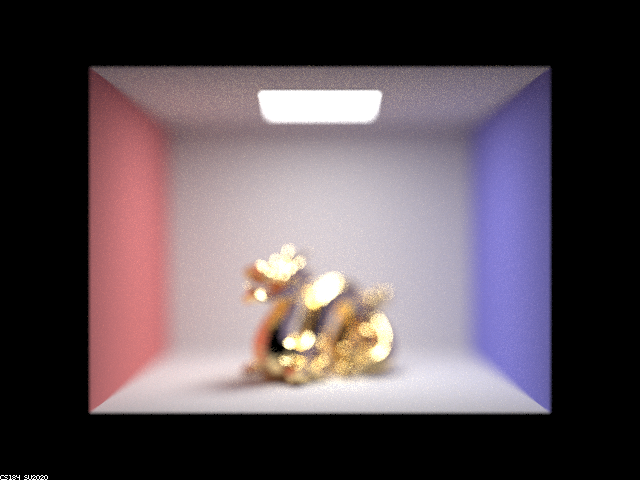
|

|
|
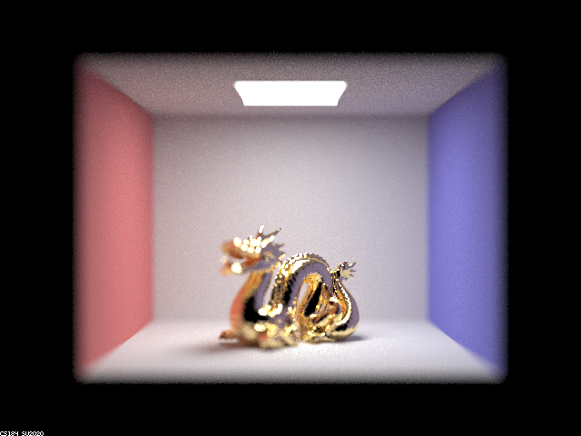
|
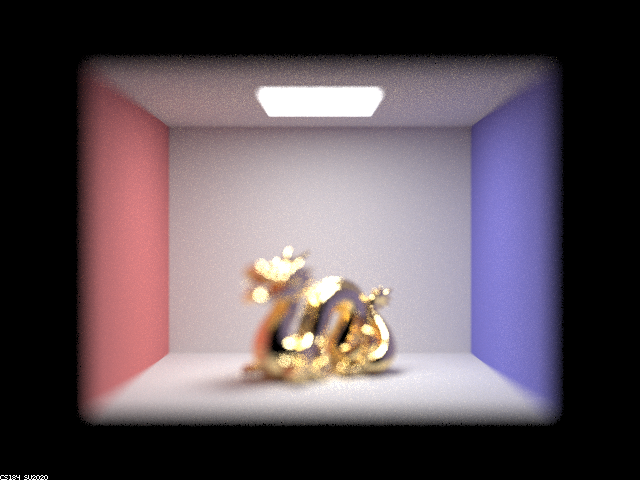
|
Show a sequence of 4 pictures with visibly different aperture sizes, all focused at the same point in a scene. Make sure to include all screenshots.
I fixed the focal distance to 4.5 and changed aperture size ranging from 0.1 to 0.4 incrementing by 0.1 each time. It may be seen that as aperture radius increased, the portion of the image that is "clear" decrease and the side of the image became more blurry. This happens because reducing the aperture makes the light cone narrower and makes the circle of confusion smaller, which increases the range in which the distance where the image is in focus. This results in the observed effect that smaller aperture radius leads to a image where more things are focused and less parts are blurry.
|
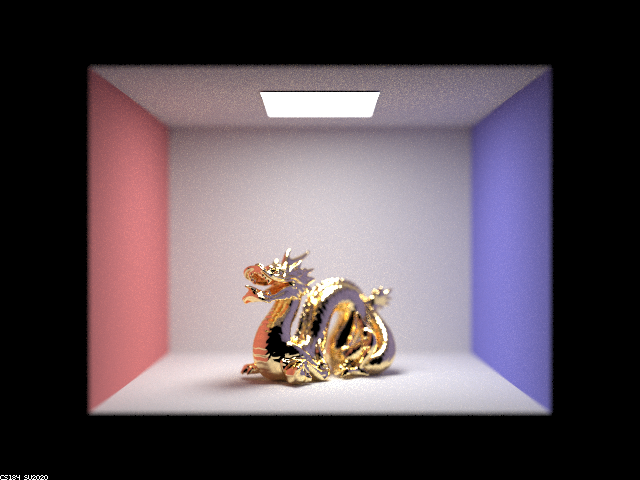
|
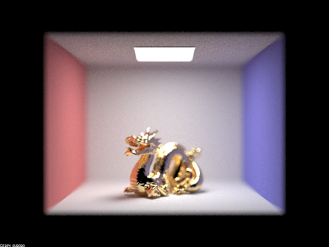
|

|
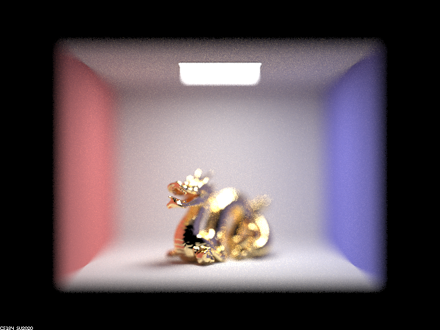
|
Group Work
Nathalys worked on implementing part 1 and Kehan worked on implementing part 4. We mostly worked indepedently but communicated to each other on our progress as well as difficulties and tried to help one another when we encountered difficulties. We were able to collaborate well and worked efficiently together to complete the assignment.